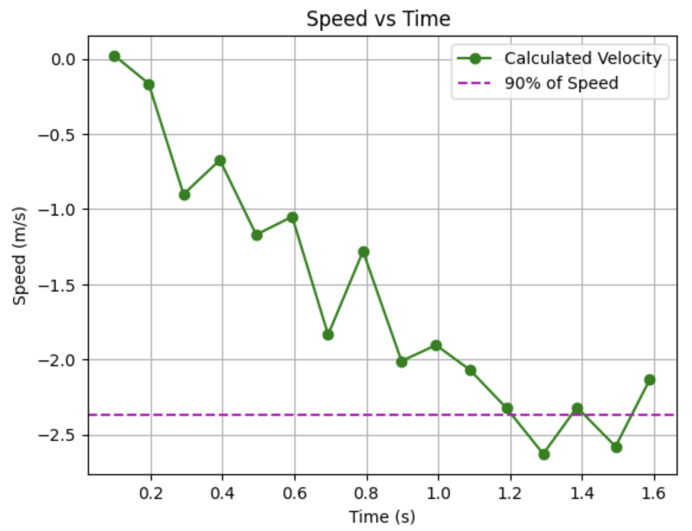

Lab 7: Kalman Filtering
ESTIMATING DRAG & MOMENTUM:
To estimate my drag and momentum, I started with a step input, u(t), of 150 PWM, which is 58.8% of the maximum PWM. I selected this value because my calibration factor is 1.8, which results in one set of wheels operating at 250 PWM and the other at 150 PWM. Since 250 PWM is the maximum, I used 150 PWM as the input. I ran my code multiple times with this input. Initially, I set the data collection time to one second but found that I couldn't gather enough data points to determine the steady-state speed. Therefore, I increased the collection time to two seconds, which allowed me to obtain sufficient data for analysis. This is the data I got:
|  |
From this trial of 150 PWM input, my 90% of speed is 2.36489 m/s which happens at approximately 1.204 seconds. I then used the equations from lecture to estimate the values for drag and momentum:

In units of mm and seconds:

For this I created a new case command that you can find here:
INITIALIZE KALMAN FILTER(PYTHON):
Given the values found before, in mm and secs units, the matrices A and B are
To discretize the matrices, I found that the sampling time is 0.0936 secs. Then, I did the following in Python to find A_d and B_d:
dt = []; summ = 0
A = np.array([[0,1],[0,-d/m]])
B = np.array([[0],[1/m]])
for i in range(0,len(time)-1):
dt = time[i+1] - time[i]
summ = summ + dt
Delta_T = summ/len(time)
Ad = np.eye(2) + (Delta_T * A)
Bd = B * Delta_T
Where I got these values for A_d and B_d:
To identify the C matrix and initialize the state vector, given that the positive distance from the wall was measured, I used this code in Python:
C = np.array([[1,0]])
x = np.array([[dist_array[0]],[0]])
The final component necessary for the Kalman Filter to function effectively is the selection of the process noise and sensor noise covariance matrices. The formulas for these, as well as the value of σ_3, were obtained from slide 16 of Lecture 14.
Σu = \(\begin{pmatrix} \sigma_1^2 & 0 \\ 0 & \sigma_2^2 \end{pmatrix}\) = \(\begin{pmatrix} \(32.678 mm)^2 & 0 \\ 0 & \(32.678 mm/s)^2 \end{pmatrix}\)
IMPLEMENT KALMAN FILTER IN JUPYTER:
...
IMPLEMENT KALMAN FILTER ON THE ROBOT:
...
REFERENCES:
For this lab I referenced, Stephan Wagner's and Mikayla Lahr's labs from previous years. I also used ChatGPT to help with the grammar.